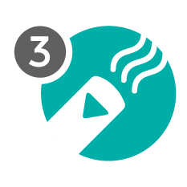
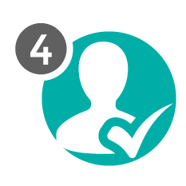

Realizamos una
minuciosa revisión ocular con ayuda de una potente lupa y una lámpara
especial, para corroborar si el paciente está contagiado con piojos o
liendres e identificar cuáles son los puntos más infectados.
USO DE LENDRERA
Una vez dividido el
cabello utilizamos un peine especializado (conocido como lendrera) para
retirar cuidadosamente la mayor parte de liendres y piojos. Este
proceso es muy meticuloso y preciso.

ASPIRACIÓN
Apoyados con
aparatología europea e innovadora diseñada especialmente para problemas
de pediculosis, procedemos a succionar con cuidado y por partes, todo el
cuero cabelludo.

REVISIÓN FINAL
Habiendo realizado
las tres fases anteriores, aplicamos nuestros exclusivos productos BYE
PIOCLIN y hacemos una exhaustiva revisión final para asegurarnos que el
paciente esté totalmente limpio.